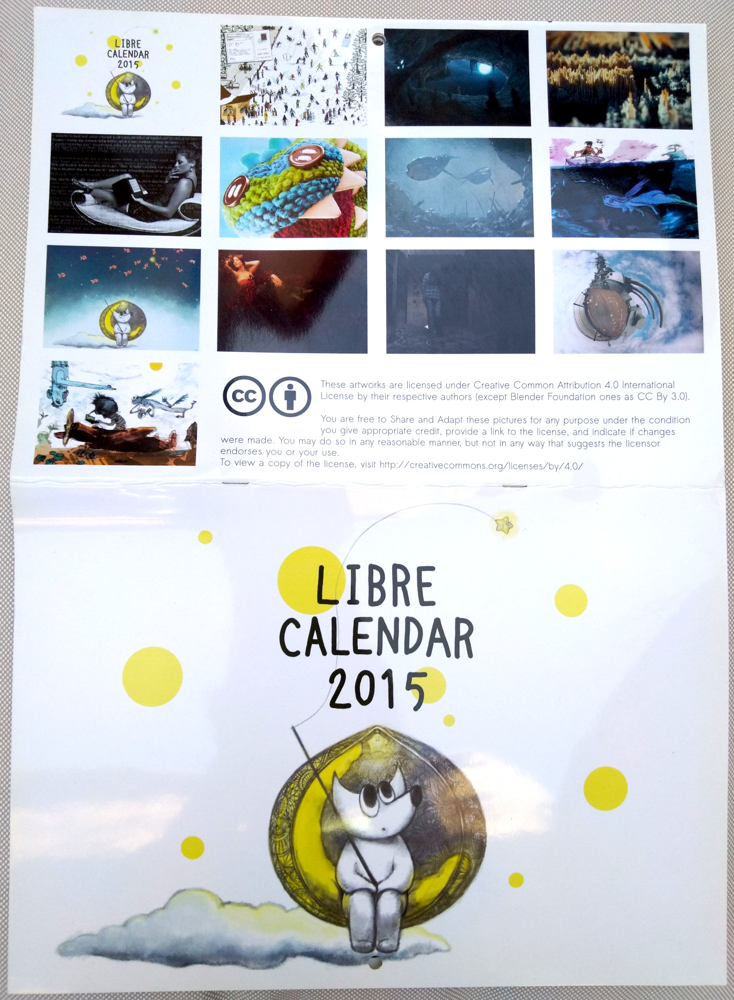

GSoC 2022 项目公布：CMYK 特性
译文信息
- 原文：GSoC 2022 project announced: CMYK features
- 作者：Wilber
- 日期：2022-06-04
- 许可证：CC-BY-SA 4.0
- 译者：Hanjingxue Boling
正文
最终项目已经确认：Nikc，一名 Google Summer of Code 学生，今年正致力于将 CMYK 功能引入 GIMP。让我们更详细地讨论一下。
声明一下，我们只向谷歌申请了这个独特的项目名额。Nikc 事先与我们讨论，以了解需求、项目的现状以及想要的方向。他们也在 GSoC 选拔前贡献了补丁，所以我们知道他们在代码审查时的互动情况。如果有人对未来几年的 GSoC 感兴趣，请考虑与我们进行这样的沟通，而不是只扔下一个提案而不在我们的邮件列表或 IRC 上联系我们。😉
GIMP 和 CMYK 到底是怎么回事？
从历史上看，在 GIMP 中实现对 CMYK 的支持是很复杂的，因为该程序过去是硬性规定几乎所有东西都使用 sRGB 色彩空间。多年来，支持任何 RGB 色彩空间的工作一直在进行，在 2.10 稳定版系列中已经有了很大的改进。另一方面，几十年来，我们的项目并没有将打印作为主要的工作流程来推动。
从 2000 年末开始，我们一直在考虑 CMYK 的后期装订工作流程，即你在 RGB 中工作，在 CMYK 中进行软打样，然后导出为 CMYK。与我们合作的 UX 架构师 Peter Sikking 提出了一个计划，但图像处理引擎缺少所需的更改，因此必须有人在 GUI 中公开所有内容。
我们最终缺少有兴趣优先考虑此事的贡献者，而且几年前我们从贡献者那里获得的一个补丁由于架构原因无法合并，必须完全重构才能与 GIMP 的其余代码很好地配合。
几年前，Øyvind Kolås 终于将缺失的部分添加到我们的图像处理引擎 GEGL，这使得我们可以将 CMYK 图像与 RGBA 图像混合并将结果写入 TIFF CMYK 文件。这为这个特定的 GSoC 项目铺平了道路。
此 GSoC 项目的目标是什么？
首先，我们还不是在讨论 CMYK 图像模式，类似于 “RGB”、“灰度”和“索引”，就像你所知道的那样。下面是该项目将关注的内容。
在 CMYK 颜色空间中导入和导出图像。GIMP 将在 CMYK 颜色空间中打开图像并将其转换为 RGB(A) 以供查看和编辑。你还可以将图像导出为 CMYK。我们目前的目标是 TIFF、PSD、PDF、EPS、AI 和 PDF 文件格式。
虽然你还不能在非原生色彩空间中编辑 CMYK 图像，但能够打开（如果只是查看）和导出 CMYK 数据显然是向前迈进了一步。此外，虽然使用 CMYK 后端对某些使用场景很有用（根据打印机的指示控制黑色或其他准确的颜色混合、墨水覆盖、陷印、叠印等等），但使用 *RGB 图像，然后在最后转移到 CMYK，仍然是许多工作类型的推荐工作流程。例如，GIMP 团队和其他团队的图形专业人员使用 GIMP 和 Scribus 的组合取得了很大的成功，这是我们强烈推荐的软件。
 使用 FLOSS 打印的示例：“Libre Calendar 2015” 是 LILA 与几位艺术家（插画家、摄影师和 3D）的合作项目，使用 GIMP、Inkscape 和 Scribus 制作，基于 Creative Commons 2.0 进行授权。
以下是有关文件格式中 CMYK 支持的当前进展：
- JPEG：
- 多年来，GIMP 一直支持加载 CMYK JPEG 加载。
- CMYK JPEG 加载最近被 Jehan Pagès 移植到使用
babl进行转换。 - Jehan Pagès 也实现了 CMYK JPEG 导出。
- 这些改进将在即将发布的 GIMP 2.99.12 中提供，并作为 Nikc 的演示样本实施，因为 Jehan 是项目导师。
- PSD：
- 感谢 Massimo Valentini 的帮助，自 GIMP 2.10.18 以来，CMYK PSD 8-bpc CMYK 加载已经可用。
- Jacob Boerema 已更新代码以在 GIMP 2.99.10 中加载 CMYK PSD 16-bpc 文件。
- Nikc 正在进行移植 CMYK PSD 加载代码以使用
babl库进行转换的工作（如果通过审查，应该在 GIMP 2.99.12 中可用）。 - 以 PSD 格式导出 CMYK 文件也属于此 GSoC 项目的范围。
- CMYK TIFF 加载和导出是 Nikc 正在进行的一项工作，如果按时通过审查，可能会在 GIMP 2.99.12 中可用。
- 将考虑支持 CMYK 的其他格式。
一个新的用于颜色管理的可停靠对话框。为了帮助后期装订工作流程，我们需要能够轻松切换软打样（模拟 CMYK 结果）。现在打开或关闭它并选择配置文件是通过繁琐的菜单完成的。
Nikc 将开发一个新的可停靠对话框，以通过 ICC 配置文件、控制软打样等在色彩空间之间进行转换。这是 CMYK 支持各种文件格式之后的下一步。一旦它被积极处理，我们会很乐意谈论这个。
作为一等公民的软打样配置文件：目前，软打样配置文件附加到视图，这意味着它会消失，需要在会话之间重新设置。此外，所选配置文件对插件不可用，这使得我们的 CMYK 导出功能在实现之前变得不那么有趣。这就是为什么我们想将软打样配置文件改为图像数据，并将其存储在 XCF 文件中。Nikc 宣布已经开始着手这方面的工作。
我们正在进行讨论以使这种更改具有通用性，以便从长远来看甚至可以存储多个模拟配置文件。 当 GIMP 将支持多个导出目标的概念时，这将特别有意义，正如早期博客文章中所理论化阐述的那样。事实上，单个图像可以针对低质量的网络预览、高质量的数字查看、打印……甚至可以有不同的打印目标。这不在本 GSoC 项目的范围内，但我们在修改核心代码时需要尽早考虑。
识别和修复色彩管理问题。GIMP 的色彩管理实现中仍然存在各种错误和缺陷。我们已经知道其中一些，并且我们毫不怀疑随着这个 GSoC 项目的工作继续进行，其他缺陷会显露出来。 其中明显需要关注的细节领域有：采色和采样点、颜色选择、软打样、各种类型的预览、可能改进特定颜色通道的工作方式……因此修复或改进这些绝对是项目的一部分。正如你从上面的链接中看到的那样，其中一些领域的工作已经开始，并且将更多代码移植到使用 babl 进行流线型转换是该项目的重要组成部分。
请注意，所有改进最终不一定只针对 CMYK，因为我们一直在努力使我们的颜色代码更通用，这意味着可能需要在更为底层的级别上进行一些更改，从而提高工作流程、效率和准确性与任何色彩模型。
我们何时交付 GSoC 项目的成果？
目前，我们希望将 Nikc 在今年春夏开发的所有新功能和改进都纳入 GIMP 3.0。
是否会有 CMYK 模式？
简短的回答是：“最终会有的”。
之前，我们谈到了 Space Invasion initiative 范围内的 anyRGB 编辑方法（图像的端到端 ICC 配置文件属性，同时通过节点组合中的各种操作传递图像）。从本质上讲，你应该能够在色彩空间（例如 AdobeRGB）中打开一幅图像，除非某个特定的 GEGL 操作需要，否则永远不会将其转换为 sRGB。
我们修改了 anyRGB 计划，将其扩展到 anyModel（RGB、CMYK、LAB 等）。这将是一项艰巨的任务，我们不期望能在 GIMP 3.0 中发布它，并且我们目前不想给出任何预估。
即使停留在印刷界的范围内，硬编码特定的 CMYK 模型，而不是拥有通用核心，也是没有意义的。例如，如果你还可以在图像中添加专色通道会怎样？ 这个 anyModel 核心是我们前进的方向，也是多年来由几个贡献者慢慢建立的基础工作的结果。